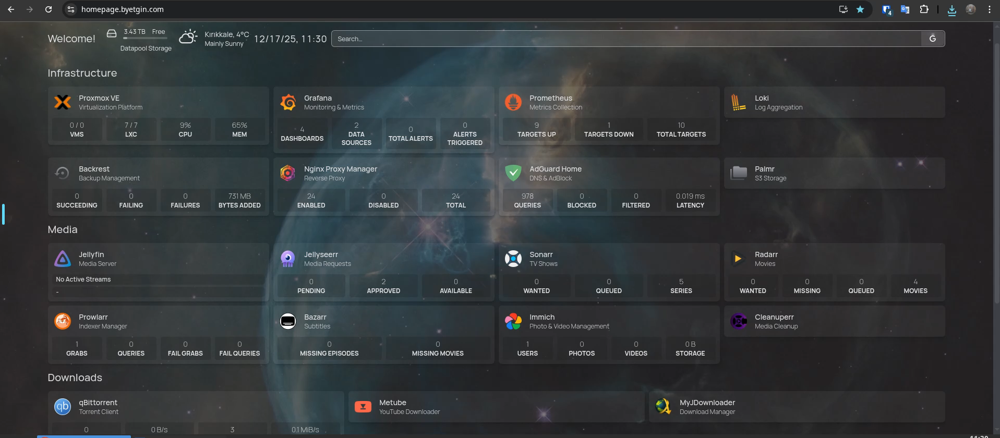
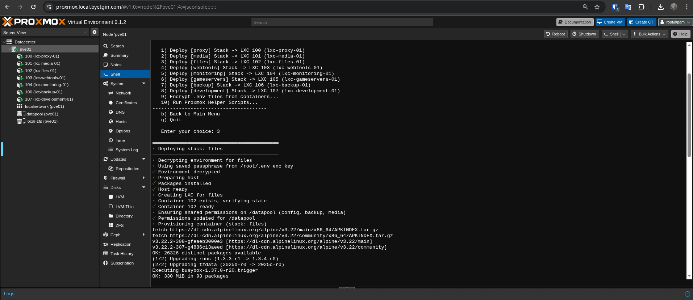
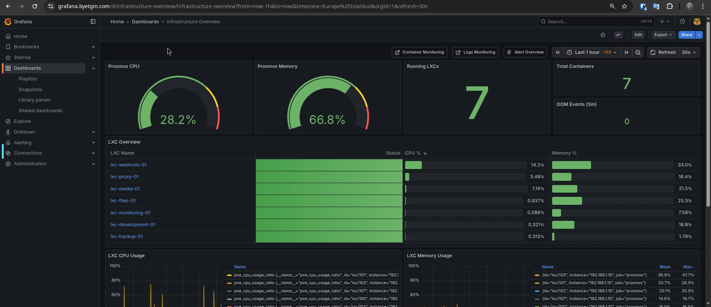
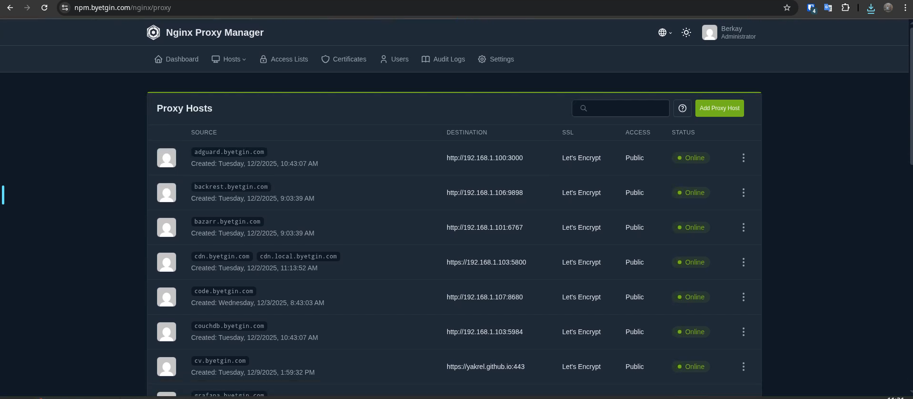

EN / TR
Proxmox Homelab Automation
My personal homelab where I simulate a production environment. 40+ Docker containers, custom Bash automation, and enterprise-grade security. It's not just a hobby, it's my practice ground.
40+ Services
~3K Lines Bash
OpenSSL Encrypted
8 LXC Hosts

Centralized Command Center: My main dashboard. I use this to check service health and disk usage at a glance.
Project Metrics
~3000
Lines of Automation Code
8
LXC Containers (Orchestrated)
40+
Microservices Running
100%
Target Uptime (Monitored)
Continuous Delivery
When I push code, GitHub Actions builds my Docker images. Backrest handles automated backups with post-success hooks syncing to Google Drive.
Zero Trust Access
I don't open ports to the internet. Access is handled via Cloudflare Tunnels, protected by Email OTPs.
Hardware Passthrough
My media server needs GPU power. I mapped the NVIDIA card directly to the LXC container using cgroups.
Infrastructure as Code
~3000 lines of Bash automation. Every server deployment is reproducible and version-controlled.
Infrastructure as Code
I didn't want to configure servers manually every time. So, I built a setup where I define everything in one YAML file (stacks.yaml), and my scripts handle the installation automatically.
Single Source of Truth
I manage all my containers and networks in stacks.yaml. If it's not in that file, it doesn't exist on the server.
Idempotency
I can run my installer script 10 times, and it won't break anything. It only applies changes if something is missing.

Interactive Automation: The installer.sh script reading from stacks.yaml to provision resources.
Security & Secrets Management
I treat this homelab like a real production server. No open ports to the outside world, and all my API keys are encrypted in the repo so I don't accidentally leak them.
AES-256 Encryption (OpenSSL)
I store sensitive keys as .env.enc in Git. They are encrypted with OpenSSL, so even if the repo is public, the secrets are safe.
Fail2Ban Integration
Even though I use Cloudflare, I also run Fail2Ban locally to block anyone trying to brute-force my internal services.
Backup & Disaster Recovery
I use a mix of local snapshots for quick fixes and encrypted cloud backups for real disasters. If the server dies, my data survives.
Layer 1: Local ZFS Snapshots
Managed by Sanoid. If I accidentally delete a file, I can roll back in seconds using ZFS snapshots.
Layer 2: Off-Site Archival
Backrest creates encrypted, deduplicated snapshots. Configuration data backed up daily, media library twice weekly. Post-success hooks automatically sync to Google Drive via rclone.
Layer 3: Infrastructure Code
Since my setup is code, I can rebuild the whole server from scratch just by running my installer.sh script.
Observability & Logs
I hate logging into servers one by one just to check if they are running. I set up a monitoring stack to see everything in one place.
Prometheus & Node Exporter
Collects metrics from Proxmox and Docker. If disk usage goes high or a service goes down, I get an alert.
Loki (Log Aggregation)
Instead of using tail -f on every server, I send all logs to Loki. I can search through them easily in Grafana.
Grafana Dashboards
My central dashboard for visualizing hardware stats, network traffic, and application health.

Operational Visibility: Real-time monitoring of Proxmox host resources (CPU/RAM) and individual LXC container performance.
Network Topology
I set up a hybrid network. My family accesses services locally (fast), while I access them securely from outside using Cloudflare Tunnels.
Public Internet
*.byetgin.com
Roaming Device
WARP VPN
Encrypted Cloudflare Tunnel (No Inbound WAN Ports)

Traffic Routing: Nginx Proxy Manager handling SSL termination and routing public subdomains to internal container IPs.
Virtualization Strategy
I use LXC for things that need to act like full operating systems, and Docker for running apps. My scripts handle the complex config to make them work together.
Docker inside LXC (Automated)
My lxc-manager.sh script automatically configures the container settings (nesting, keys) so I can run Docker inside LXC without issues.
Automated GPU Passthrough
Instead of editing config files manually, my script detects the NVIDIA card and injects the right permissions into the LXC config automatically.
lxc-manager.sh (Snippet)
gpu_passthrough_lines=(
'lxc.cgroup2.devices.allow: c 195:* rwm'
'lxc.cgroup2.devices.allow: c 510:* rwm'
'lxc.mount.entry: /dev/nvidia0 dev/nvidia0 none bind,optional,create=file'
)
for line in "${gpu_passthrough_lines[@]}"; do
if ! grep -Fxq "$line" "$LXC_CONFIG_PATH"; then
echo "$line" >> "$LXC_CONFIG_PATH"
fi
done
Live Inventory
Systems Operational
Loading infrastructure data...
Architectural Decisions
Why not Kubernetes?
For a single-node environment, Kubernetes introduces significant resource overhead and operational complexity. I opted for Docker Compose to maintain native performance and simplicity while achieving declarative state via custom automation.
Why Bash for IaC?
Instead of adding external dependencies like Ansible, I used modular Bash scripts to stay close to the OS. This ensures the environment is fully reproducible on my Proxmox host, though adapting it to other networks requires configuration changes.
Why Hybrid Cloud?
I combine Private Cloud (on-prem compute/storage) with Public Cloud (Cloudflare security, Google Drive backups). This strategy ensures high performance for local media while maintaining enterprise-grade security and off-site durability.
Why LXC instead of VMs?
LXC containers provide near-native performance with minimal overhead (~2-3% vs VMs ~10-15%). For stateless workloads and Docker hosts, this translates to 3x better density on the same hardware.